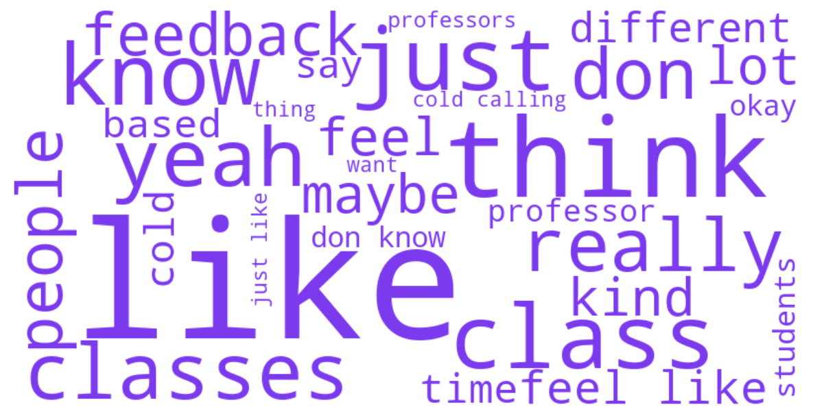

MPP2 Focus Group
90 student turns · Mean sentiment: 0.68
90
Student turns
6595
Total words
0.68
Mean sentiment
Sentiment Arc
Emotional trajectory through the MPP2 focus group session. Hover over points to read actual quotes.
Distinctive Vocabulary

Top Themes
Feedback & Assessment: Timing, Quality, and Accountability
"I find it odd that there aren't more rules or structures around what professors can and can't do around assessment structure, around feedback expectations, timing. I feel like every class you go to, i..."
Participation Grades vs. Class Size: A Structural Tension
"Can we talk about classes with cross-registering maybe as a comparison?"
Teaching Quality & Faculty Investment
"When I arrived at HKS and was told that we'd be doing case discussions, I had a different expectation than what I received in most of my classes."
Faculty Accessibility & Office Hours
"Consistent formatting for office hours would help. I have had a professor who used Calendly, and I didn't realize they updated every two weeks."
Cold Calling
"Cold calling as a general thing is great. I think it can really enhance learning. But it's a spectrum. If you go to the other extreme where the focus is to just put people on the spot, that's differen..."
Core Curriculum: Structure, Flexibility, and Program Identity
"Yeah, one thing might be pessimistic, but when we look at the [NAME] for the [NAME], the first thing I look at is the course description, and it describes very well. But then it says, like, I'll drop ..."
Student Professionalism & Classroom Culture
"At the end of the day it's all about the professor's leadership that makes that class good."
Academic Rigor: Expectations Met and Unmet
"People should fail more classes. There's this very strong aversion in the culture to people being able to fail. Graduating students who put in very little effort damages the brand."
Norm Enforcement & the Rules Gap
"And even then, we're not sure if it's last cases or the school call base."
Distinctive Keywords
like
think
class
just
know
yeah
classes
really
don
people
feedback
maybe
feel
lot
kind
feel like
different
cold
time
based